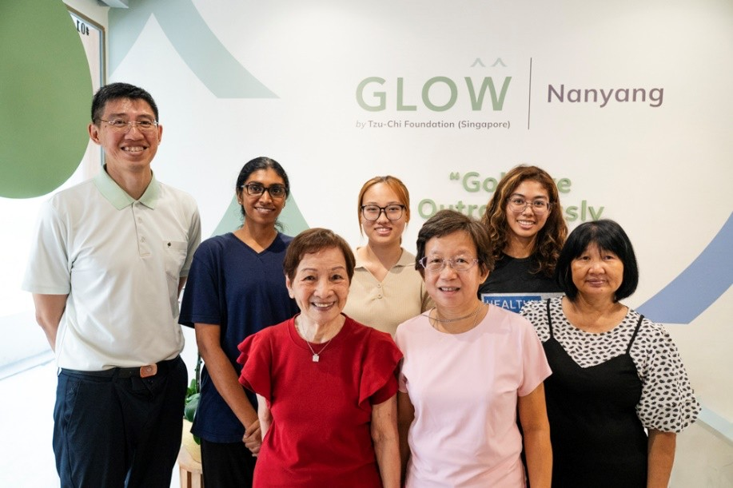

Preparing to care
I may become a caregiver. Help me understand where to begin and who can support me.
Prepare for caregiving

Wherever you are in your journey
Preparing to care, managing today, or adjusting to a new chapter? Find guidance for your stage.
Read the caregiving guideI may become a caregiver. Help me understand where to begin and who can support me.
Prepare for caregivingI am looking after someone. Help me find practical support and room for myself.
Find help for todayMy caring role has changed or ended. Help me find support for this next chapter.
Explore life after caringIf you help care for someone while managing school, work or friendships, there is a place for your needs too. Explore guidance for young caregivers.
Who we are
P3H brings practical resources, training, respite and peer support together, so you can care for your loved ones and yourself. Wherever you are in your journey, you don’t have to do it alone.
Get to know P3H & our partnersA place to start
Choose what you need and explore the support available to you.
Care navigation, financial assistance and help with applications.
Explore care supportPractical caregiving skills, training and planning for the future.
Discover caregiver trainingMake room for self-care, wellness and short-term respite support.
Find time to rechargeConnect with fellow caregivers and share experiences and resources.
Explore peer supportTogether at P3H

Time to recharge
Discover moments from our wellness activities.
View activity photos
Creating together
Explore a creative activity with our community.
View activity photos
Community connections
A closer look at our caregiver gatherings.
View activity photosWho we help
Existing subsidised services may not meet every caregiver’s needs, while private care can be difficult to afford. P3H supports youth and adult caregivers in this “missing middle”.
Find out who P3H supportsLet’s take the next step together
Tell us what you need. Our team is here to listen and help you find your next step.

Programme provider
The foundation brings community care and caregiver support together through Humanistic Hands and Heart.
Visit Tzu Chi Singapore →Community care setting
A Tzu Chi Active Ageing Centre where P3H was soft-launched on 1 April 2026.
About visiting GLOW →Technology collaboration
The community technology partner that collaborated with GLOW to develop P3H.
Caregiver training & peer support partner
Mindfull Community partners with P3H to provide C2C training and C4C peer support for caregivers.
Activity volunteer partner
Volunteers from Republic Polytechnic help with P3H activities such as scrapbooking and bookmark making.
Grant support
P3H is supported by the Income OrangeAid Caregiver Support Accelerator Grant, a strategic partnership between Income Insurance and the National Council of Social Service. Tzu Chi is one of 10 social service agencies in the first cohort.
Read the official grant announcement →Contact the P3H team to ask about Tzu Chi SEEN and Longevity Courtyard, and which activities may be relevant to your needs.
Ask about community connections